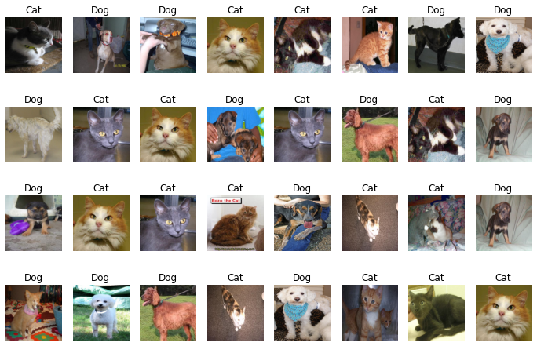
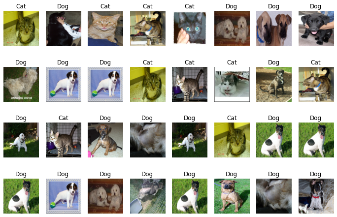

import numpy as np
import torch
from torch.utils.data import Dataset
from torchvision import datasets, transforms이미지 데이터셋 다운로드
torchvision의 Image Transform 에 대하여 생소하다면 다음의 링크를 참고해 주시기 바랍니다.
- torchvision의 transform으로 이미지 정규화하기(평균, 표준편차를 계산하여 적용
- PyTorch 이미지 데이터셋(Image Dataset) 구성에 관한 거의 모든 것!
개와 고양이 데이터셋을 다운로드 받아서 tmp 폴더에 압축을 풀어 줍니다.
import urllib.request
import zipfile
# 데이터셋을 다운로드 합니다.
# 다운로드 후 tmp 폴더에 압축을 해제 합니다.
url = 'https://download.microsoft.com/download/3/E/1/3E1C3F21-ECDB-4869-8368-6DEBA77B919F/kagglecatsanddogs_5340.zip'
urllib.request.urlretrieve(url, 'cats_and_dogs.zip')
local_zip = 'cats_and_dogs.zip'
zip_ref = zipfile.ZipFile(local_zip, 'r')
zip_ref.extractall('tmp/')
zip_ref.close()하단의 code snippets는 corrupted 된 이미지를 확인하고 제거하기 위한 코드 입니다. Cats vs Dogs데이터셋에도 원인 모를 이유 때문에 이미지 데이터가 corrupt된 파일이 2개가 존재합니다. 이렇게 corrupt 된 이미지를 DataLoader로 로드시 에러가 발생하기 때문에 전처리 때 미리 제거하도록 하겠습니다.
import os
from PIL import Image, UnidentifiedImageError
root = 'tmp/PetImages' # image 데이터셋 root 폴더
dirs = os.listdir(root)
for dir_ in dirs:
folder_path = os.path.join(root, dir_)
files = os.listdir(folder_path)
images = [os.path.join(folder_path, f) for f in files if f.endswith(('jpg', 'png'))]
for img in images:
try:
# PIL.Image로 이미지 데이터를 로드하려고 시도합니다.
Image.open(img)
except UnidentifiedImageError: # corrupt 된 이미지는 해당 에러를 출력합니다.
print(f'unidentified error..{img}')
# corrupted 된 이미지 제거
os.remove(img)unidentified error..tmp/PetImages/Dog/11702.jpg
unidentified error..tmp/PetImages/Cat/666.jpg개와 고양이 데이터셋을 시각화 하기 위하여 임시 DataLoader를 생성합니다.
from torchvision.datasets import ImageFolder
from torch.utils.data import DataLoader
# 이미지 폴더로부터 데이터를 로드합니다.
dataset = ImageFolder(root='tmp/PetImages', # 다운로드 받은 폴더의 root 경로를 지정합니다.
transform=transforms.Compose([
transforms.Resize((224, 224)), # 개와 고양이 사진 파일의 크기가 다르므로, Resize로 맞춰줍니다.
transforms.ToTensor(),
]))
data_loader = DataLoader(dataset,
batch_size=32,
shuffle=True,
num_workers=8
)# ImageFolder로부터 로드한 dataset의 클래스를 확인합니다.
# 총 2개의 클래스로 구성되었음을 확인할 수 있습니다(cats, dogs)
dataset.classes['Cat', 'Dog']# 1개의 배치를 추출합니다.
images, labels = next(iter(data_loader))# 이미지의 shape을 확인합니다. 224 X 224 RGB 이미지 임을 확인합니다.
images[0].shapetorch.Size([3, 224, 224])개와 고양이 데이터셋 시각화
- 총 2개의 class(강아지/고양이)로 구성된 사진 파일입니다.
import matplotlib.pyplot as plt
# ImageFolder의 속성 값인 class_to_idx를 할당
labels_map = {v:k for k, v in dataset.class_to_idx.items()}
figure = plt.figure(figsize=(12, 8))
cols, rows = 8, 4
# 이미지를 출력합니다. RGB 이미지로 구성되어 있습니다.
for i in range(1, cols * rows + 1):
sample_idx = torch.randint(len(images), size=(1,)).item()
img, label = images[sample_idx], labels[sample_idx].item()
figure.add_subplot(rows, cols, i)
plt.title(labels_map[label])
plt.axis("off")
# 본래 이미지의 shape은 (3, 300, 300) 입니다.
# 이를 imshow() 함수로 이미지 시각화 하기 위하여 (300, 300, 3)으로 shape 변경을 한 후 시각화합니다.
plt.imshow(torch.permute(img, (1, 2, 0)))
plt.show()
train / validation 데이터셋 split
현재 cats and dogs데이터셋에 하나의 데이터셋으로 구성된 Image 파일을 2개의 데이터셋(train/test)으로 분할하도록 하겠습니다.
Image Augmentation 적용
Image Augmentation을 적용 합니다.
# Image Transform을 지정합니다.
image_transform = transforms.Compose([
transforms.Resize((224, 224)), # (224, 224) 이미지 크기 조정
transforms.RandomHorizontalFlip(0.5), # 50% 확률로 Horizontal Flip
transforms.ToTensor(), # Tensor 변환
# transforms.Normalize((0.485, 0.456, 0.406), (0.229, 0.224, 0.225)), # 이미지 정규화
])# 이미지 폴더로부터 데이터를 로드합니다.
dataset = ImageFolder(root='tmp/PetImages/', # 다운로드 받은 폴더의 root 경로를 지정합니다.
transform=image_transform) # Image Augmentation 적용 # Image Augmentation 이 적용된 DataLoader를 로드 합니다.
data_loader = DataLoader(dataset,
batch_size=32,
shuffle=True,
num_workers=8
)
# 1개의 배치를 추출합니다.
images, labels = next(iter(data_loader))# ImageFolder의 속성 값인 class_to_idx를 할당
labels_map = {v:k for k, v in dataset.class_to_idx.items()}
figure = plt.figure(figsize=(12, 8))
cols, rows = 8, 4
# 이미지를 출력합니다. RGB 이미지로 구성되어 있습니다.
for i in range(1, cols * rows + 1):
sample_idx = torch.randint(len(images), size=(1,)).item()
img, label = images[sample_idx], labels[sample_idx].item()
figure.add_subplot(rows, cols, i)
plt.title(labels_map[label])
plt.axis("off")
# 본래 이미지의 shape은 (3, 300, 300) 입니다.
# 이를 imshow() 함수로 이미지 시각화 하기 위하여 (300, 300, 3)으로 shape 변경을 한 후 시각화합니다.
plt.imshow(torch.permute(img, (1, 2, 0)))
plt.show()
from torch.utils.data import random_split
ratio = 0.8 # 학습셋(train set)의 비율을 설정합니다.
train_size = int(ratio * len(dataset))
test_size = len(dataset) - train_size
print(f'total: {len(dataset)}\ntrain_size: {train_size}\ntest_size: {test_size}')
# random_split으로 8:2의 비율로 train / test 세트를 분할합니다.
train_data, test_data = random_split(dataset, [train_size, test_size])total: 24998
train_size: 19998
test_size: 5000torch.utils.data.DataLoader
DataLoader는 배치 구성과 shuffle등을 편하게 구성해 주는 util 입니다.
batch_size = 32 # batch_size 지정
num_workers = 8 # Thread 숫자 지정 (병렬 처리에 활용할 쓰레드 숫자 지정)
train_loader = DataLoader(train_data,
batch_size=batch_size,
shuffle=True,
num_workers=num_workers
)
test_loader = DataLoader(test_data,
batch_size=batch_size,
shuffle=False,
num_workers=num_workers
)train_loader의 1개 배치의 shape 출력
images, labels = next(iter(train_loader))
images.shape, labels.shape(torch.Size([32, 3, 224, 224]), torch.Size([32]))배치사이즈인 32가 가장 첫번째 dimension에 출력되고, 그 뒤로 채널(3), 세로(224px), 가로(224px) 순서로 출력이 됩니다.
즉, 224 X 224 RGB 컬러 이미지 32장이 1개의 배치로 구성이 되어 있습니다.
# 1개의 이미지의 shape를 확인합니다.
# 224 X 224 RGB 이미지가 잘 로드 되었음을 확인합니다.
images[0].shapetorch.Size([3, 224, 224])pre-trained 모델 로드
CUDA 설정이 되어 있다면 cuda를! 그렇지 않다면 cpu로 학습합니다.
(제 PC에는 GPU가 2대 있어서 cuda:0로 GPU 장비의 index를 지정해 주었습니다. 만약 다른 장비를 사용하고 싶다면 cuda:1 이런식으로 지정해 주면 됩니다)
# device 설정 (cuda:0 혹은 cpu)
device = torch.device("cuda:1" if torch.cuda.is_available() else "cpu")
print(device)cuda:1pre-trained model을 fine tuning 하여 Image Classification을 구현하도록 하겠습니다.
from torchvision import models # pretrained 모델을 가져오기 위한 import
# VGG16 모델 생성
model = models.vgg16(pretrained=True) # pretrained=True 로 설정, pretrained=False로 설정되었을 경우 가중치는 가져오지 않습니다.그 밖의 활용 가능한 pretrained 모델
models.alexnet(pregrained=True)# AlexNetmodels.resnet18(pretrained=True)# ResNet18models.inception_v3(pretrained=True)# Inception_V3
# 가중치를 Freeze 하여 학습시 업데이트가 일어나지 않도록 설정합니다.
for param in model.parameters():
param.requires_grad = False # 가중치 Freezeimport torch.nn as nn
# Fully-Connected Layer를 Sequential로 생성하여 VGG pretrained 모델의 'Classifier'에 연결합니다.
fc = nn.Sequential(
nn.Linear(7*7*512, 256), # VGG16 모델의 features의 출력이 7X7, 512장 이기 때문에 in_features=7*7*512 로 설정합니다.
nn.ReLU(),
nn.Linear(256, 64),
nn.ReLU(),
nn.Linear(64, 2), # Cats vs Dogs 이진 분류이기 때문에 2로 out_features=2로 설정합니다.
)model.classifier = fc
model.to(device)
# 모델의 구조도 출력
modelVGG(
(features): Sequential(
(0): Conv2d(3, 64, kernel_size=(3, 3), stride=(1, 1), padding=(1, 1))
(1): ReLU(inplace=True)
(2): Conv2d(64, 64, kernel_size=(3, 3), stride=(1, 1), padding=(1, 1))
(3): ReLU(inplace=True)
(4): MaxPool2d(kernel_size=2, stride=2, padding=0, dilation=1, ceil_mode=False)
(5): Conv2d(64, 128, kernel_size=(3, 3), stride=(1, 1), padding=(1, 1))
(6): ReLU(inplace=True)
(7): Conv2d(128, 128, kernel_size=(3, 3), stride=(1, 1), padding=(1, 1))
(8): ReLU(inplace=True)
(9): MaxPool2d(kernel_size=2, stride=2, padding=0, dilation=1, ceil_mode=False)
(10): Conv2d(128, 256, kernel_size=(3, 3), stride=(1, 1), padding=(1, 1))
(11): ReLU(inplace=True)
(12): Conv2d(256, 256, kernel_size=(3, 3), stride=(1, 1), padding=(1, 1))
(13): ReLU(inplace=True)
(14): Conv2d(256, 256, kernel_size=(3, 3), stride=(1, 1), padding=(1, 1))
(15): ReLU(inplace=True)
(16): MaxPool2d(kernel_size=2, stride=2, padding=0, dilation=1, ceil_mode=False)
(17): Conv2d(256, 512, kernel_size=(3, 3), stride=(1, 1), padding=(1, 1))
(18): ReLU(inplace=True)
(19): Conv2d(512, 512, kernel_size=(3, 3), stride=(1, 1), padding=(1, 1))
(20): ReLU(inplace=True)
(21): Conv2d(512, 512, kernel_size=(3, 3), stride=(1, 1), padding=(1, 1))
(22): ReLU(inplace=True)
(23): MaxPool2d(kernel_size=2, stride=2, padding=0, dilation=1, ceil_mode=False)
(24): Conv2d(512, 512, kernel_size=(3, 3), stride=(1, 1), padding=(1, 1))
(25): ReLU(inplace=True)
(26): Conv2d(512, 512, kernel_size=(3, 3), stride=(1, 1), padding=(1, 1))
(27): ReLU(inplace=True)
(28): Conv2d(512, 512, kernel_size=(3, 3), stride=(1, 1), padding=(1, 1))
(29): ReLU(inplace=True)
(30): MaxPool2d(kernel_size=2, stride=2, padding=0, dilation=1, ceil_mode=False)
)
(avgpool): AdaptiveAvgPool2d(output_size=(7, 7))
(classifier): Sequential(
(0): Linear(in_features=25088, out_features=256, bias=True)
(1): ReLU()
(2): Linear(in_features=256, out_features=64, bias=True)
(3): ReLU()
(4): Linear(in_features=64, out_features=2, bias=True)
)
)import torch.optim as optim# 옵티마이저를 정의합니다. 옵티마이저에는 model.parameters()를 지정해야 합니다.
optimizer = optim.Adam(model.parameters(), lr=0.0005)
# 손실함수(loss function)을 지정합니다. Multi-Class Classification 이기 때문에 CrossEntropy 손실을 지정하였습니다.
loss_fn = nn.CrossEntropyLoss()훈련(Train)
from tqdm import tqdm # Progress Bar 출력def model_train(model, data_loader, loss_fn, optimizer, device):
# 모델을 훈련모드로 설정합니다. training mode 일 때 Gradient 가 업데이트 됩니다. 반드시 train()으로 모드 변경을 해야 합니다.
model.train()
# loss와 accuracy 계산을 위한 임시 변수 입니다. 0으로 초기화합니다.
running_loss = 0
corr = 0
# 예쁘게 Progress Bar를 출력하면서 훈련 상태를 모니터링 하기 위하여 tqdm으로 래핑합니다.
prograss_bar = tqdm(data_loader)
# mini-batch 학습을 시작합니다.
for img, lbl in prograss_bar:
# image, label 데이터를 device에 올립니다.
img, lbl = img.to(device), lbl.to(device)
# 누적 Gradient를 초기화 합니다.
optimizer.zero_grad()
# Forward Propagation을 진행하여 결과를 얻습니다.
output = model(img)
# 손실함수에 output, label 값을 대입하여 손실을 계산합니다.
loss = loss_fn(output, lbl)
# 오차역전파(Back Propagation)을 진행하여 미분 값을 계산합니다.
loss.backward()
# 계산된 Gradient를 업데이트 합니다.
optimizer.step()
# output의 max(dim=1)은 max probability와 max index를 반환합니다.
# max probability는 무시하고, max index는 pred에 저장하여 label 값과 대조하여 정확도를 도출합니다.
_, pred = output.max(dim=1)
# pred.eq(lbl).sum() 은 정확히 맞춘 label의 합계를 계산합니다. item()은 tensor에서 값을 추출합니다.
# 합계는 corr 변수에 누적합니다.
corr += pred.eq(lbl).sum().item()
# loss 값은 1개 배치의 평균 손실(loss) 입니다. img.size(0)은 배치사이즈(batch size) 입니다.
# loss 와 img.size(0)를 곱하면 1개 배치의 전체 loss가 계산됩니다.
# 이를 누적한 뒤 Epoch 종료시 전체 데이터셋의 개수로 나누어 평균 loss를 산출합니다.
running_loss += loss.item() * img.size(0)
# 누적된 정답수를 전체 개수로 나누어 주면 정확도가 산출됩니다.
acc = corr / len(data_loader.dataset)
# 평균 손실(loss)과 정확도를 반환합니다.
# train_loss, train_acc
return running_loss / len(data_loader.dataset), acc평가(Evaluate)
def model_evaluate(model, data_loader, loss_fn, device):
# model.eval()은 모델을 평가모드로 설정을 바꾸어 줍니다.
# dropout과 같은 layer의 역할 변경을 위하여 evaluation 진행시 꼭 필요한 절차 입니다.
model.eval()
# Gradient가 업데이트 되는 것을 방지 하기 위하여 반드시 필요합니다.
with torch.no_grad():
# loss와 accuracy 계산을 위한 임시 변수 입니다. 0으로 초기화합니다.
corr = 0
running_loss = 0
# 배치별 evaluation을 진행합니다.
for img, lbl in data_loader:
# device에 데이터를 올립니다.
img, lbl = img.to(device), lbl.to(device)
# 모델에 Forward Propagation을 하여 결과를 도출합니다.
output = model(img)
# output의 max(dim=1)은 max probability와 max index를 반환합니다.
# max probability는 무시하고, max index는 pred에 저장하여 label 값과 대조하여 정확도를 도출합니다.
_, pred = output.max(dim=1)
# pred.eq(lbl).sum() 은 정확히 맞춘 label의 합계를 계산합니다. item()은 tensor에서 값을 추출합니다.
# 합계는 corr 변수에 누적합니다.
corr += torch.sum(pred.eq(lbl)).item()
# loss 값은 1개 배치의 평균 손실(loss) 입니다. img.size(0)은 배치사이즈(batch size) 입니다.
# loss 와 img.size(0)를 곱하면 1개 배치의 전체 loss가 계산됩니다.
# 이를 누적한 뒤 Epoch 종료시 전체 데이터셋의 개수로 나누어 평균 loss를 산출합니다.
running_loss += loss_fn(output, lbl).item() * img.size(0)
# validation 정확도를 계산합니다.
# 누적한 정답숫자를 전체 데이터셋의 숫자로 나누어 최종 accuracy를 산출합니다.
acc = corr / len(data_loader.dataset)
# 결과를 반환합니다.
# val_loss, val_acc
return running_loss / len(data_loader.dataset), acc모델 훈련(training) & 검증
# 최대 Epoch을 지정합니다.
num_epochs = 10
model_name = 'vgg16-pretrained'
min_loss = np.inf
# Epoch 별 훈련 및 검증을 수행합니다.
for epoch in range(num_epochs):
# Model Training
# 훈련 손실과 정확도를 반환 받습니다.
train_loss, train_acc = model_train(model, train_loader, loss_fn, optimizer, device)
# 검증 손실과 검증 정확도를 반환 받습니다.
val_loss, val_acc = model_evaluate(model, test_loader, loss_fn, device)
# val_loss 가 개선되었다면 min_loss를 갱신하고 model의 가중치(weights)를 저장합니다.
if val_loss < min_loss:
print(f'[INFO] val_loss has been improved from {min_loss:.5f} to {val_loss:.5f}. Saving Model!')
min_loss = val_loss
torch.save(model.state_dict(), f'{model_name}.pth')
# Epoch 별 결과를 출력합니다.
print(f'epoch {epoch+1:02d}, loss: {train_loss:.5f}, acc: {train_acc:.5f}, val_loss: {val_loss:.5f}, val_accuracy: {val_acc:.5f}')100% 625/625 [00:26<00:00, 23.84it/s][INFO] val_loss has been improved from inf to 0.08280. Saving Model!
epoch 01, loss: 0.10340, acc: 0.95800, val_loss: 0.08280, val_accuracy: 0.96640100% 625/625 [00:26<00:00, 23.66it/s][INFO] val_loss has been improved from 0.08280 to 0.07407. Saving Model!
epoch 02, loss: 0.05826, acc: 0.97875, val_loss: 0.07407, val_accuracy: 0.97000100% 625/625 [00:26<00:00, 23.65it/s]epoch 03, loss: 0.03845, acc: 0.98585, val_loss: 0.07802, val_accuracy: 0.97000100% 625/625 [00:26<00:00, 23.66it/s][INFO] val_loss has been improved from 0.07407 to 0.07289. Saving Model!
epoch 04, loss: 0.03055, acc: 0.98995, val_loss: 0.07289, val_accuracy: 0.97040100% 625/625 [00:26<00:00, 23.63it/s]epoch 05, loss: 0.02400, acc: 0.99145, val_loss: 0.08889, val_accuracy: 0.97360100% 625/625 [00:26<00:00, 23.64it/s]epoch 06, loss: 0.01867, acc: 0.99350, val_loss: 0.09361, val_accuracy: 0.96700100% 625/625 [00:26<00:00, 23.61it/s]epoch 07, loss: 0.01388, acc: 0.99545, val_loss: 0.10376, val_accuracy: 0.97060100% 625/625 [00:26<00:00, 23.62it/s]epoch 08, loss: 0.01014, acc: 0.99630, val_loss: 0.09322, val_accuracy: 0.97280100% 625/625 [00:26<00:00, 23.59it/s]epoch 09, loss: 0.00869, acc: 0.99700, val_loss: 0.10921, val_accuracy: 0.97100100% 625/625 [00:26<00:00, 23.65it/s]epoch 10, loss: 0.00601, acc: 0.99820, val_loss: 0.12610, val_accuracy: 0.97220저장한 가중치 로드 후 검증 성능 측정
# 모델에 저장한 가중치를 로드합니다.
model.load_state_dict(torch.load(f'{model_name}.pth'))<All keys matched successfully># 최종 검증 손실(validation loss)와 검증 정확도(validation accuracy)를 산출합니다.
final_loss, final_acc = model_evaluate(model, test_loader, loss_fn, device)
print(f'evaluation loss: {final_loss:.5f}, evaluation accuracy: {final_acc:.5f}')evaluation loss: 0.07186, evaluation accuracy: 0.97320